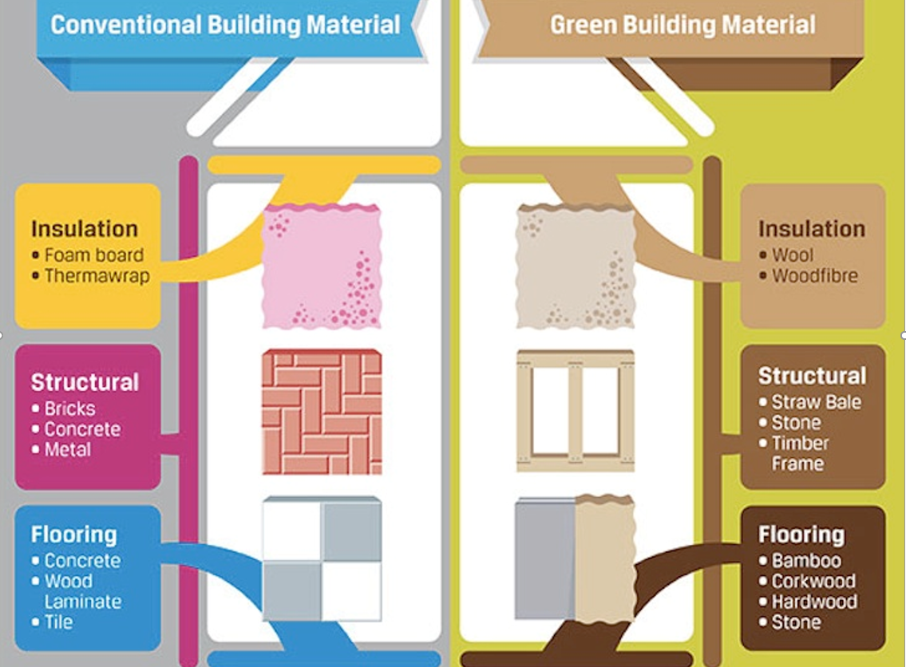
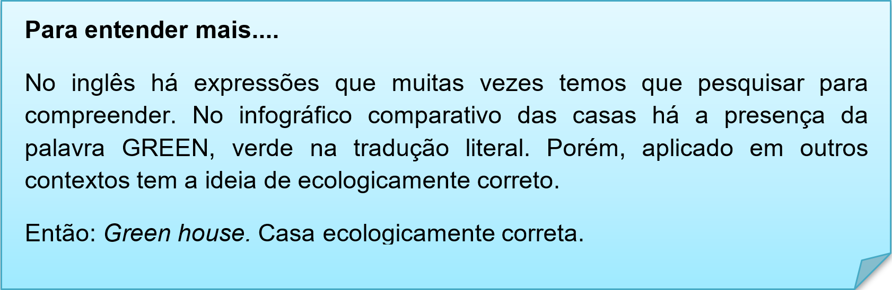
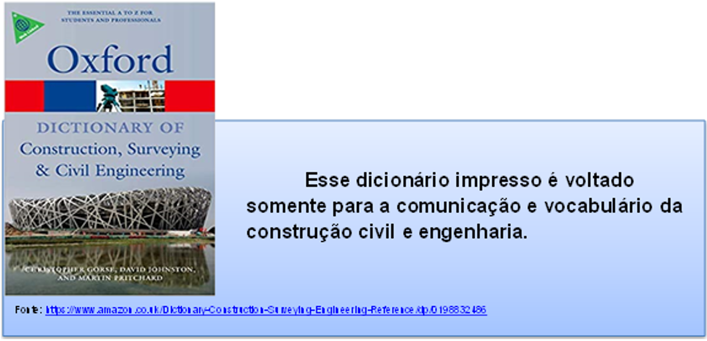
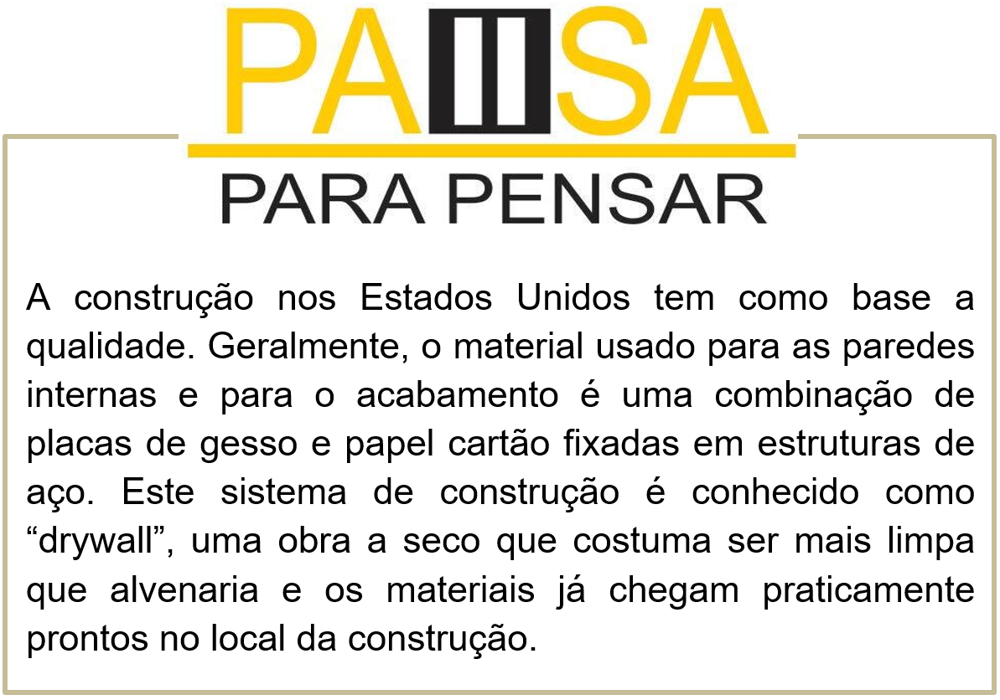
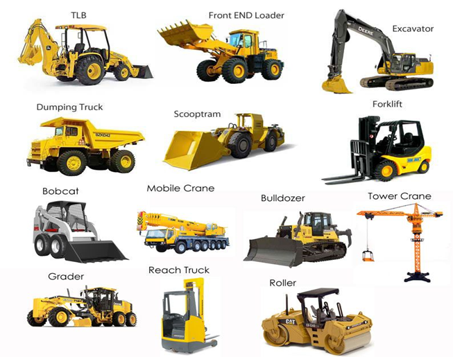
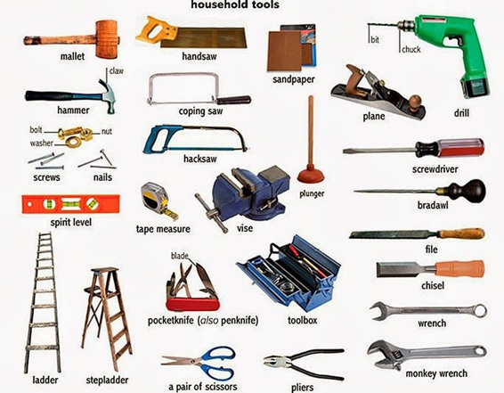
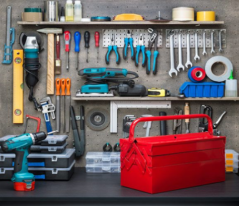

Capítulo 1: Construction, Wood and Furniture - Construção, Madeira e Mobiliário
Então você se depara com essas informações em língua inglesa. No primeiro momento assusta, mas não se desespere, vamos ver passo a passo como compreender um texto estrangeiro. Para isso vamos “construir” nosso vocabulário lexical sobre construção civil. Vamos ler com atenção as informações e analisar as palavras com atenção.
Build Your Green Dream Home With These Eco-Friendly Alternatives to Conventional Building Materials
Para compreendermos textos estrangeiros, precisamos ter atenção, seguir algumas técnicas e ter em mãos um bom dicionário impresso ou online.
As imagens são parte de uma leitura. Na imagem observamos diversos materiais de construção e há uma comparação explícita. Casa ecológica e não ecológica.

Biblioteca – dicionários
Para iniciantes é preciso ter um bom dicionário a mão ou no celular, já que utilizamos a tecnologia diariamente. Vamos a nossa BIBLIOTECA com dicas de dicionários. Algumas editoras possuem dicionários com vocabulário específico. Os mais utilizados são da linha Oxford. Veja na nossa dica cultural.

Dicionários em websites com pronúncia:
www.linguee.com.br
Esse site oferece traduções e pronúncia. E tem a opção para aplicativos em celulares Android e Iphone.
Para os mais tecnológicos há inúmeros aplicativos de dicionários, segue uma dica para utilização em off-line.
Contextualizando - Vocabulary: equipaments for constructions – Equipamentos para construção - glossário
Glossário é uma espécie de dicionário de tamanho reduzido que serve como apoio em um determinado texto. Já o pictionary é a associação de imagem e palavra. Um dicionário ilustrado. Vamos conhecer mais palavras relacionadas à construção civil. Ferramentas, equipamentos e máquinas.
Machines - máquinas
Esses equipamentos de grande porte são utilizados para realizar construções de houses (casas) e buildings (prédios).
Types of constructios:
The four major types of construction include residential building, institutional and commercial building, specialized industrial construction, infrastructure and heavy construction.
Residential Building – prédios residenciais
Institutional and Commercial Building – prédios comerciais
Specialized Industrial Construction – construções industriais
Infrastructure and Heavy Construction – grandes construções pesadas
Household tools – ferramentas
Reconstruindo conhecimentos
Uso do there to be
Para planejar e organizar algo precisamos fazer listas de itens que tem ou não. Essas listagens são feitas com o THERE TO BE. Que possui duas formas: singular e plural.
There is – tem
There are – têm
Então: there is a house. > Tem uma casa
There are four houses. > Têm quatro casas.
O que aprendi
• Usar dicionários e sites de dicionários;
• Ampliamos os conhecimentos sobre construções e ferramentas;
• Aprendemos a fazer frases com listas usando there to be;
• Aprendemos o uso da expressão green.
Assista ao vídeo e aprenda mais sobre o uso do there to be.
Praticando
Volte ao início da unidade, no infográfico das construções. Observe a imagem abaixo e faça uma lista de materiais em inglês para construir uma GREEN HOUSE.
Stone:
Observe a imagem e faça uma lista em inglês usando o there to be dos objetos que constam. Consulte nosso dicionário ilustrado.

There is a toolbox. Tem uma caixa de ferramentas.
______________________________________
______________________________________